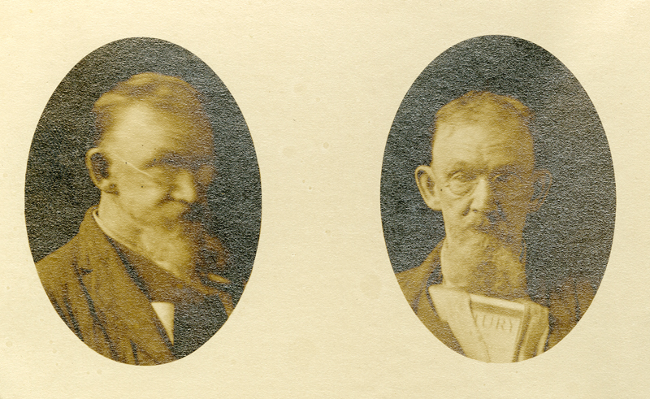

I saw the years of my life spaced along a road in the form of telephone poles, threaded together by wires. I counted one, two, three ... nineteen telephone poles, and then the wires dangled into space, and try as I would, I couldn't see a single pole beyond the nineteenth.
Sylvia Plath · The Bell Jar · p. 157